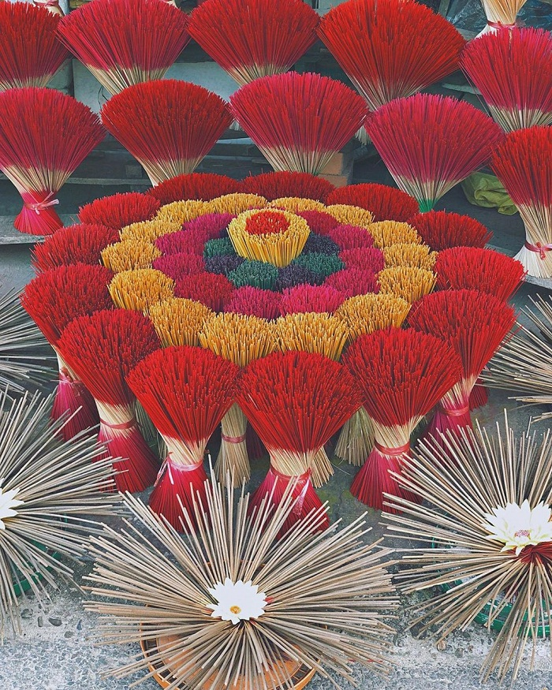

Origin
The incense field originates from the traditional villages of making incense (worshipping items in Asia) in the North, Vietnam. With the image of colorful incenses being dried in the public space like a large field. The term “The Way of Dong Hung” was born.
Incense has a special significance in spiritual life in many Asian countries, including Vietnam. Burning incense is part of Vietnamese culture and beliefs. In today’s edition of Vietnam in close-up, will give you three traditional incense craft villages to find out how incense sticks are made.
